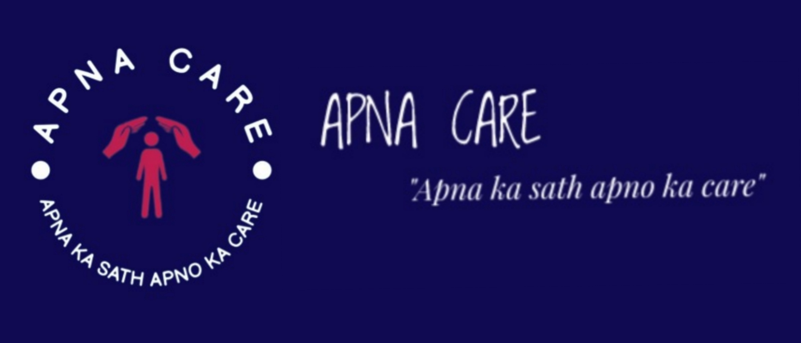
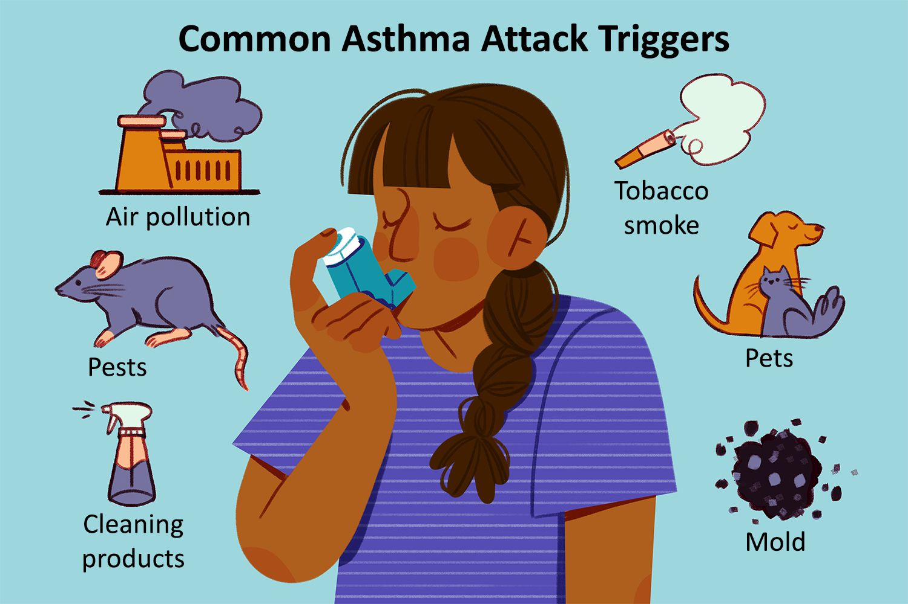
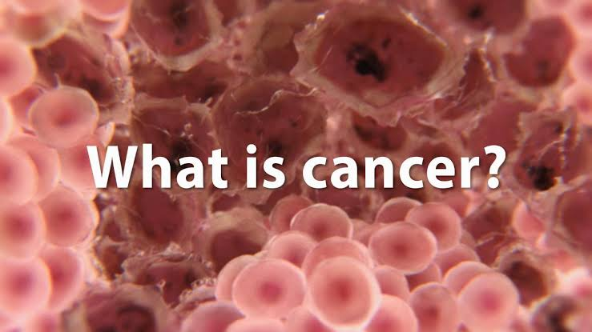
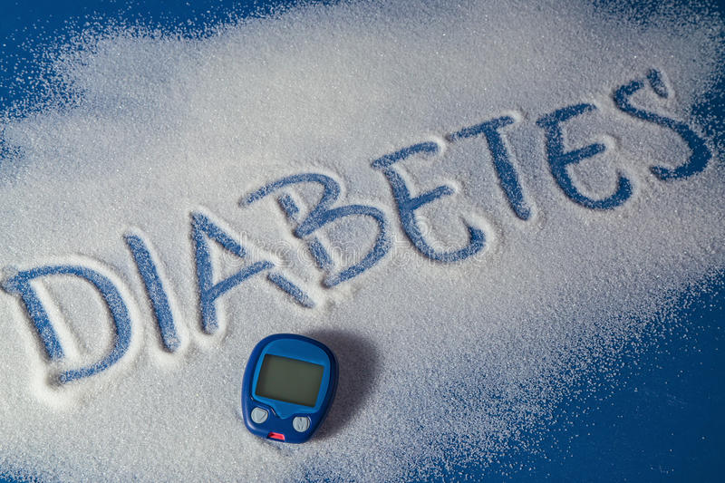

Apna Care
is well recognized with improvement in health status of population is both an important means of sustaining
economic and social development as well as an end in itself. While India has made rapid strides in the health
sector since independence, data from NFHS-5 indicates that access to healthcare still remains a challenge.

Asthma is a long-term inflammatory disease of the airways of the lungs. It is characterized by variable and
recurring symptoms, reversible airflow obstruction, and easily triggered bronchospasms. Symptoms include
episodes of wheezing, coughing, chest tightness, and shortness of breath. These may occur a few times a day or a
few times per week.Depending on the person, asthma symptoms may become worse at night or with exercise.
Asthma is thought to be caused by a combination of genetic and environmental factors. Environmental factors
include exposure to air pollution and allergens. Other potential triggers include medications such as aspirin
and beta blockers. Diagnosis is usually based on the pattern of symptoms, response to therapy over time, and
spirometry lung function testing. Asthma is classified according to the frequency of symptoms, forced expiratory
volume in one second (FEV1), and peak expiratory flow rate. It may also be classified as atopic or non-atopic,
where atopy refers to a predisposition toward developing a type 1 hypersensitivity reaction.

Cancer is a group of diseases involving abnormal cell growth with the potential to invade or spread to other
parts of the body. These contrast with benign tumors, which do not spread. Possible signs and symptoms include a
lump, abnormal bleeding, prolonged cough, unexplained weight loss, and a change in bowel movements. While these
symptoms may indicate cancer, they can also have other causes. Over 100 types of cancers affect humans.
Tobacco use is the cause of about 22% of cancer deaths. Another 10% are due to obesity, poor diet, lack of
physical activity or excessive drinking of alcohol. Other factors include certain infections, exposure to
ionizing radiation, and environmental pollutants. In the developing world, 15% of cancers are due to infections
such as Helicobacter pylori, hepatitis B, hepatitis C, human papillomavirus infection, Epstein–Barr virus and
human immunodeficiency virus (HIV). These factors act, at least partly, by changing the genes of a cell.
Typically, many genetic changes are required before cancer develops. Approximately 5–10% of cancers are due to
inherited genetic defects

This article is about the common insulin disorder. For the urine hyper production disorder, see Diabetes
insipidus. For other uses, see Diabetes (disambiguation).
Diabetes
A hollow circle with a thick blue border and a clear centre
Universal blue circle symbol for diabetes
Specialty Endocrinology Diabetes, also known as diabetes mellitus, is a group of metabolic disorders characterized by a high blood sugar
level (hyperglycemia) over a prolonged period of time. Symptoms often include frequent urination,
increased thirst and increased appetite. If left untreated, diabetes leads to many health complications.
Acute complications can include diabetic ketoacidosis, hyperosmolar hyperglycemic state, or death. Serious
long-term complications include cardiovascular disease, stroke, chronic kidney disease, foot ulcers, damage to
the nerves, damage to the eyes, and cognitive impairmen
Diabetes is due to either the pancreas not producing enough insulin, or the cells of the body not responding
properly to the insulin produced.[ Insulin is a hormone which is responsible for helping glucose from food
get into cells to be used for energy.[ There are three main types of diabetes mellitus:

As of now, researchers know that the coronavirus is spread through droplets and virus particles released into the air when an infected person breathes, talks, laughs, sings, coughs or sneezes. Larger droplets may fall to the ground in a few seconds, but tiny infectious particles can linger in the air and accumulate in indoor places, especially where many people are gathered and there is poor ventilation. This is why mask-wearing, hand hygiene and physical distancing are essential to preventing COVID-19.The first case of COVID-19 was reported Dec. 1, 2019, and the cause was a then-new coronavirus later named SARS-CoV-2. SARS-CoV-2 may have originated in an animal and changed (mutated) so it could cause illness in humans. In the past, several infectious disease outbreaks have been traced to viruses originating in birds, pigs, bats and other animals that mutated to become dangerous to humans. Research continues, and more study may reveal how and why the coronavirus evolved to cause pandemic disease.